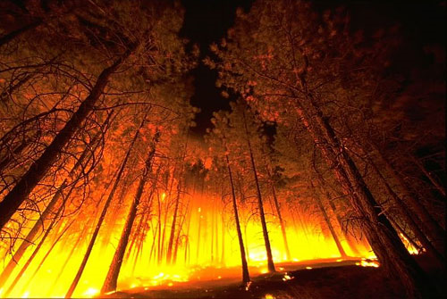

Prior to the development of fire hydrants in the 1600s, city firefighters would dig down to a water main, bore a hole in it, then fill buckets or use hand pumps to put water on the flames. After the fire, the holes in the water main were plugged with wooden stoppers known as fire plugs.
Prior to the development of fire hydrants in the 1600s, city firefighters would dig down to a water main, bore a hole in it, then fill buckets or use hand pumps to put water on the flames. After the fire, the holes in the water main were plugged with wooden stoppers known as fire plugs.
Arson is difficult to solve because arsonists are usually careful to avoid eyewitnesses and often much evidence is destroyed. Investigators must discover evidence in the ash and debris left by the fire. This evidence is often circumstantial, meaning that facts support the evidence but no conclusive proof is available.
The successful arrest and prosecution of an arsonist involves extensive investigation of circumstantial evidence. Prosecutors are willing to accept this type of evidence and are committed to taking these circumstantial cases to trial.
A Forest Fire Burning at Night

The dominant colour in a flame changes with temperature. This can be seen in a photograph of a forest fire. Near the ground, the fire appears white or bright yellow because this is where most of the burning occurs; hence, it is the hottest region of the fire. Above the yellow region, the colour changes to orange, which is cooler. Above this, the fire appears red, which is cooler still. Above the red region, combustion is no longer occurring; therefore, the carbon particles are visible as black smoke.